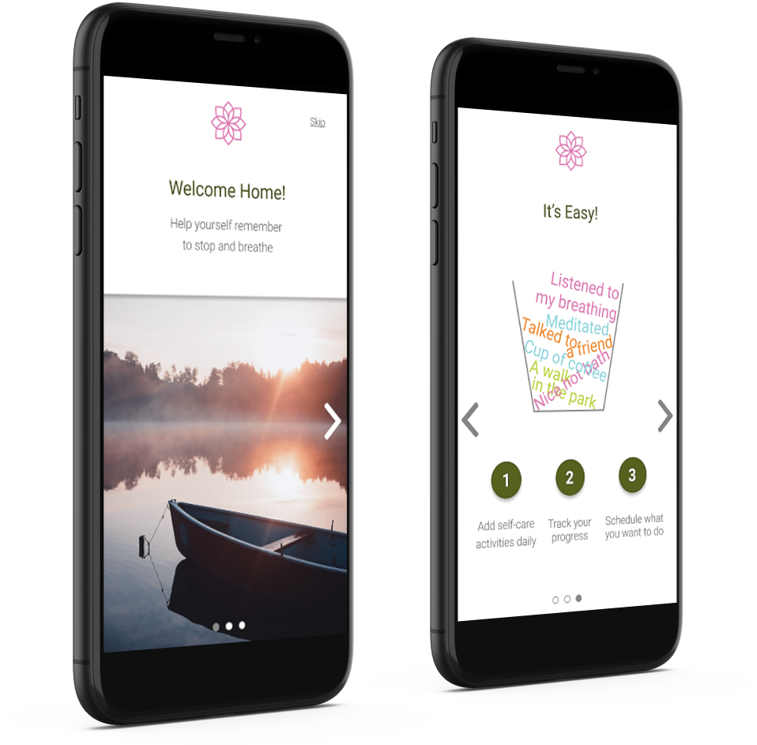

Build experiences that
Projects

Fill Your Cup App for Mothers
CDC research shows that nationally, about 1 in 8 women experience symptoms of postpartum depression. Is there a way to help women take better care of their mental health? We’ve designed one way to help.
Learn More
How is photography relevant to user experience?
For seven years I've been watching people from behind the lens. Talking to them, asking questions, and looking for their reactions.
Learn More